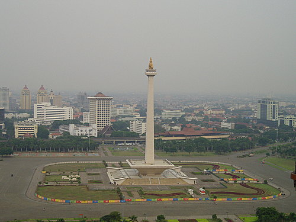
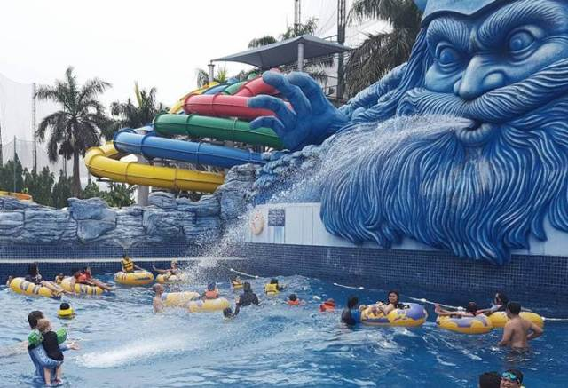
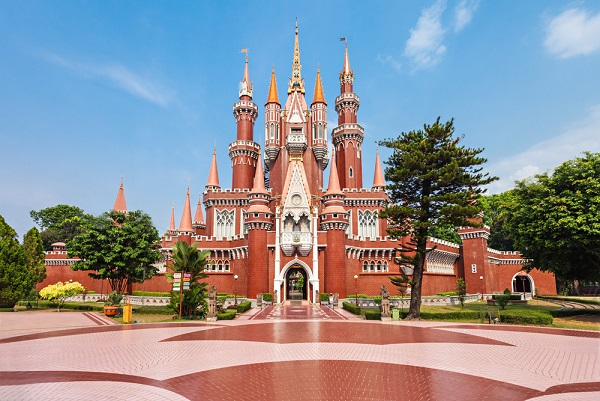
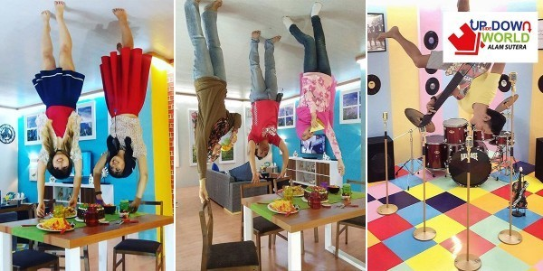

1. Monumen Nasional (Tugu Monas)

Sebagai landmark dari kota Jakarta, Tugu Monas sangat cocok dijadikan tujuan wisata bagi keluarga.
Di bagian dasar Tugu Monas terdapat Museum Sejarah Nasional Indonesia, dengan luas ruangan 80 x 80 meter,
dapat menampung pengunjung hingga 500 orang.
Pengunjung juga dapat menggunakan lift pada Tugu Monas yang akan membawa pengunjung ke puncak Monas yang memiliki ketinggian 115 meter.
Untuk masuk ke Tugu Monas, pengunjung yang datang harus membayar tiket dengan harga 5 ribu Rupiah untuk dewasa, 3 ribu Rupiah untuk mahasiswa,
dan anak- anak sebesar 2 ribu rupiah. Untuk naik lift ke puncak Monas, pengunjung dikenakan biaya 10ribu Rupiah (dewasa)/5ribu Rupiah (mahasiswa)
Tugu Monas dibuka untuk umum dari jam 8 pagi sampai jam 3 sore, kecuali pada Senin pekan terakhir tiap bulan.
2. Main air di Pondok Indah Water Park

Untuk anda yang berwisata bersama keluarga, terutama anak-anak, anda bisa mengunjungi The Wave Pondok Indah Water Park.
Objek wisata yang terletak di sebelah Pondok Indah Mall ini menawarkan sensasi liburan baru bersama keluarga.
Di Pondok Indah Water Park terdapat setidaknya tujuh buah wahana permainan air yang dapat digunakan oleh semua kalangan usia, dari
anak-anak sampai dewasa.
Untuk menikmati liburan di Pondok Indah Water Park, anda cukup membayar tiket masuk 100 ribuan untuk hari biasa
dan 150 ribuan saat akhir pekan.
3. Taman Mini Indonesia Indah

Objek wisata lain di Jakarta yang pas untuk seluruh anggota keluarga adalah Taman Mini Indonesia Indah atau TMII.
empat wisata yang satu ini cocok bagi semua kalangan mulai dari anak-anak, remaja, hingga dewasa. Disini Anda bisa melihat rumah-rumah adat dari Sabang hingga Merauke. Tidak salah jika TMMI ini disebut sebagai miniaturnya Indonesia.
Selain itu ada sejumlah taman, museum, beragam tempat ibadah, teater, dan wahana rekreasi menyenangkan lainnya.
Tempat wisata dengan luas 150 hektare ini berlokasi di Jakarta Timur dan beroperasi Senin hingga Minggu. Dengan harga tiket berbeda-beda tiap wahananya.
4. Upside Down World Alam Sutera

Objek wisata yang terletak di Tangerang Selatan, cocok untuk wisata dan juga berfoto bersama keluarga.
Wisata 3 dimensi ini menyajikan beberapa tema yang bisa dijadikan sesi berfoto bersama keluarga. Diantaranya, tema dapur, ruang keluarga, kamar mandi, kamar tidur,
taman, cafe bahkan studio band.
Dilengkapi dengan perabotan sungguhan yang menempel di tembok stiap ruangan. Sehingga ilusi yang didapatkan terlihat nyata
dan seolah-olah pengunjung sedang melawan gravitasi saat berjalan.
HTM: Rp 50.000 (anak usia 2-12 tahun) dan Rp 100.000 (dewasa).
Jam buka: Senin-jum’at (11:00-21:00). Sabtu dan Minggu (10:00-20:00).